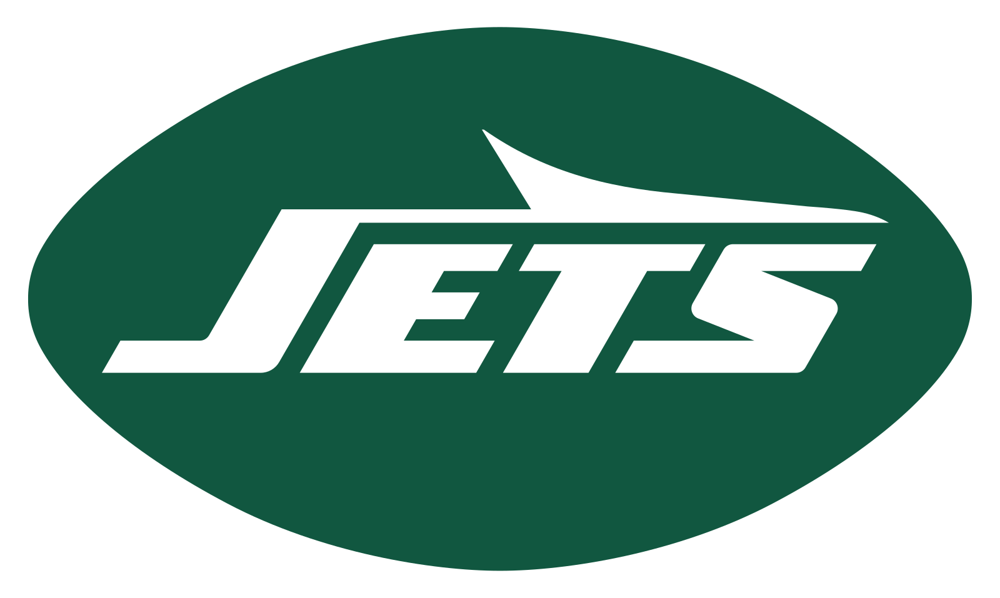

Cowboys @ Jets
2019 Week 6:
Dallas
Cowboys
3 - 3
22
New York
Jets
1 - 4
24
Sunday, October 13, 2019
03:25 PM
| Team | Spread | Total | ML |
|---|---|---|---|
 DAL DAL |
-7.0 | o43.5 | DAL |
|  NYJ | +7.0 | u43.5 | NYJ |
Season Stats
* All stats shown are from the current season, up to but not including this game.
| DAL |
NYJ | |
|---|---|---|
| Records | ||
| W/L Record | 3-2 (1-1 Away) | 0-4 (0-2 Home) |
| Against The Spread | 2-3 (0-2 Away) | 2-2 (1-1 Home) |
| Over/Under | 3-2 (1-1 Away) | 1-3 (0-2 Home) |
| Offense | ||
| Avg. Pass Yds | 321.2 (4th) | 148.5 (32nd) |
| Avg. Rush Yds | 140.8 (6th) | 66.0 (30th) |
| Avg. Total Yds | 462.0 (1st) | 214.5 (32nd) |
| Avg. Points | 26.2 (9th) | 9.75 (31st) |
| Defense | ||
| Avg. Pass Yds Allowed | 240.8 (9th) | 272.0 (20th) |
| Avg. Rush Yds Allowed | 101.4 (12th) | 87.5 (8th) |
| Avg. Total Yds Allowed | 342.2 (7th) | 359.5 (12th) |
| Avg. Points Allowed | 18.0 (7th) | 25.25 (23rd) |
Fantasy Points by Position (In Progress)
| DAL |
NYJ | |
|---|---|---|
| Points For | ||
| Quarterback | ||
| Running Back | ||
| Wide Receiver | ||
| Tight End | ||
| D/ST | ||
| Kicker | ||
| Points Against | ||
| Quarterback | ||
| Running Back | ||
| Wide Receiver | ||
| Tight End | ||
| D/ST | ||
| Kicker |
Game Stats (In Progress)
* All stats shown are from the current season, up to but not including this game.